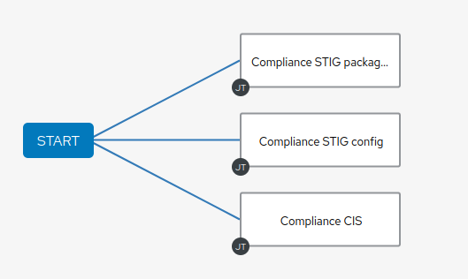

Parallel Jobs
The real power of instance groups is revealed when multiple jobs are started, and they are assigned to different controller nodes. To launch parallel jobs we will set up a workflow with multiple concurrent jobs.
Lab Scenario
To configure something meaningful we’ll make a quick detour into security automation here. During this lab we’ll focus on security compliance according to STIG, CIS and so on. Often these compliance rules are enforced by executing an Ansible task per each requirement. This makes documentation and audit easier.
Compliance requirements are often grouped into independent categories. The tasks can often be executed in parallel because they do not conflict with each other.
In our demo case we use three playbooks which:
-
ensure the absence of a few packages (STIG)
-
ensure configuration of PAM and login cryptography (STIG)
-
ensure absence of services and kernel modules (CIS).
The Playbooks can be found in the Github repository you already setup as a Project in your controller.
Prepare the Compliance Lab
Create three Templates
As mentioned the Github repository you configured as a Project contains three Playbooks to enforce different compliance requirements. Since you learned in the previous chapter how to configure automation controller with the AWX Collection from a Playbook, we want to put that knowledge to the test. Create a new Playbook in your VScode editor on the bastion node that creates the needed job Templates for the provided Ansible Playbooks in automation controller. Create one task for each of the three Ansible Playbooks:
-
stig-packages.yml (task name
Compliance STIG packages) -
stig-config.yml (task name
Compliance STIG config) -
cis.yml (task name
Compliance CIS)
You can basically use the task definition AWX Job Template from the Playbook configure-controller.yml and adapt the task’s name and playbook parameters. With one important addition:
- Change the Execution Environment by adding
execution_environment: Ansible Engine 2.9 execution environmentto each task. This is needed because the default Execution Environment doesn’t contain a module we use in the Playbooks (modprobe)
If you closed your VSCode terminal or lost connection, the environment variables with the connection parameters are gone. Just set them again by sourcing the set-connection.sh file you created before.
Click here for Solution
---
- name: Configure automation controller
hosts: localhost
become: false
gather_facts: false
tasks:
- name: Compliance STIG packages Job Template
awx.awx.job_template:
name: Compliance STIG packages
organization: Default
state: present
inventory: AWX inventory
become_enabled: True
playbook: stig-packages.yml
project: AWX Project
credential: AWX Credentials
execution_environment: Ansible Engine 2.9 execution environment
- name: Compliance STIG config Job Template
awx.awx.job_template:
name: Compliance STIG config
organization: Default
state: present
inventory: AWX inventory
become_enabled: True
playbook: stig-config.yml
project: AWX Project
credential: AWX Credentials
execution_environment: Ansible Engine 2.9 execution environment
- name: Compliance CIS Job Template
awx.awx.job_template:
name: Compliance CIS
organization: Default
state: present
inventory: AWX inventory
become_enabled: True
playbook: cis.yml
project: AWX Project
credential: AWX Credentials
execution_environment: Ansible Engine 2.9 execution environment
Create Parallel Workflow
To enable parallel execution of the tasks in these job templates, we will create a workflow using the web UI. Workflows are configured in the Templates view, you might have noticed you can choose between Add job template and Add workflow template when adding a template.
-
Go to the Templates view and click the
 button. Choose Add workflow template
button. Choose Add workflow template-
Name: Compliance Workflow
-
Organization: Default - click on the magnifying glass if necessary
-
Click Save
-
-
Now the Workflow Visualizer graphical workflow designer opens.
-
Click on the Start button, a dialog to configure a new workflow node opens.
-
First select the node type, you can choose between Job Template, Project Sync, Inventory Source Sync, Approval and Workflow Job Template.
-
Select Job Template
-
In this lab we’ll link multiple jobs to the Start, so select the Compliance STIG packages job template your Playbook configured and click Save. The new workflow node gets annotated with the name of the job.
-
Hover your mouse over the now blue Start button and click the + sign, the Add Node dialog opens again.
-
This time select the Compliance STIG config job template and hit Save.
-
Hover your mouse over the Start button again, and configure the last job template.
-
Select the Compliance CIS job template and click Save.
-
Click the blue Save button at the upper right to save the workflow.
-
Your workflow is now ready, you can always open the workflow visualizer again by clicking the Visualizer tab of the workflow.
You have configured a Workflow that is not going through templates one after the other but rather executes three templates in parallel.

Execute and Watch
Your workflow is ready to go, launch it.
-
In the Templates view launch the Compliance Workflow by clicking the rocket icon.
-
Wait until the workflow has finished.
Go to the Instance Groups view and find out how the jobs where distributed over the instances:
-
Open the controlplane instance group by clicking it and switch to the Instances tab.
-
Look at the Total Jobs view of the three instances
-
Because the Job Templates called in the workflow didn’t specify an instance group, they where distributed (more or less) evenly over the instances.
Deactivate a node
Now deactivate instance autoctl1.<GUID>.internal by setting the slider button to Off and wait until it is shown as unavailable. Make a (mental) note of the Total Jobs counter of the instance. Go back to the list of templates and launch the workflow Compliance Workflow again.
Go back to the Instance Groups view, get back to the instance overview of instance group controlplane and verify that the three Playbooks where launched on the remaining instances and the Total Jobs counter of instance autoctl1.<GUID>.internal didn’t change.
Activate autoctl1.<GUID>.internal by sliding the button to On again.
Using Instance Groups
So we have seen how a automation controller cluster is distributing jobs over instances by default. We have already created instance groups which allow us to take control over which job is executed on which node, so let’s use them.
To make it easier to spot where the jobs were run, let’s first empty the jobs history. This can be done using the awx-manage utility on one of the automation controller instances. From your VSCode terminal as lab-user SSH to your autoctl1.<GUID>.internal node, become user awx and run the actual command:
[lab-user@bastion ~]$ ssh autoctl1.<GUID>.internal
[ec2-user@autoctl1 ~]$ sudo -u awx -i
[awx@autoctl1 ~]$ awx-manage cleanup_jobs --days=0
Then exit back to being lab-user on the bastion node again. If you now check the Total Jobs of your instances they should show count “0”.
Assign Jobs to Instance Groups
One way to assign a job to an instance group is in the job template. As our compliance workflow uses three job templates, do this for all of them:
-
In the web UI, go to Templates
-
Open one of the three (Compliance CIS, Compliance STIG config, Compliance STIG packages) compliance templates (not the workflow template)
-
Click Edit
-
In the Instance Groups field, choose the dev instance group and click Select.
-
Click Save for the job template!
-
Do this for the other two compliance templates, too.
Now the jobs that make up our Compliance Workflow are all configured to run on the instances of the dev instance group.
Run the Workflow
You have done this a couple of times now, you should get along without detailed instructions.
-
Run the Compliance Workflow
-
What would you expect? On what instance(s) should the workflow jobs run?
-
Verify!
Result: The workflow and the associated jobs will run on autoctl2.<GUID>.internal. Okay, big surprise, in the dev instance group there is only one instance.
But what’s going to happen if you disable this instance?
-
Disable the autoctl2.<GUID>.internal instance on the Instances tab of Instance Group
devby setting the switch to Off. -
Run the workflow again.
-
What would you expect? On what instance(s) should the workflow jobs run?
-
Verify!
Result: The workflow is running but the associated jobs will stay in pending state because there are no instances available in the `dev’ instance group, and the workflow runs “forever”.
What’s going to happen if you enable the instance again?
-
Go to the Instances tab of the instance group
devagain and enable autoctl2.<GUID>.internal. -
Check in the Jobs and Instance Groups view what’s happening.
Result: After the instance is enabled again the jobs will pickup and run on autoctl2.<GUID>.internal.
At this point make sure the instances you disabled in the previous steps are definitely enabled again! Otherwise subsequent lab tasks might fail…